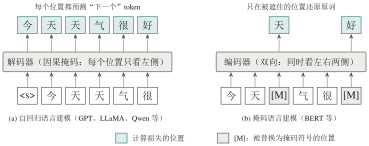
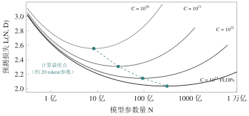

3.2 预训练基础：目标与规模
互联网上的文本几乎取之不尽，却没有人工标签；而传统的监督学习离不开标签。预训练怎样利用这些无标注文本？用什么任务训练，模型又该做多大、喂多少数据？本节先说明预训练属于迁移学习，再讲它的核心——自监督目标“预测下一个 token”，最后用规模定律回答“给定算力，模型与数据怎么配”。结论是：自回归目标与生成任务天然一致，是生成式大模型的统一选择；在训练成本最优的意义下，参数量与训练 token 数应同步增长，经验上每个参数约对应 20 个 token。
3.2.1 什么是预训练，为什么需要它
预训练（pre-training）指搭建大规模神经网络，在海量数据上用自监督的方法训练，得到一套通用模型参数的过程。它的两个特点是数据量足够大、参数规模足够大。
从机器学习的角度看，预训练属于迁移学习（transfer learning）。传统做法是“一个任务、一套标注数据、一个从随机参数训起的专用模型”；预训练范式则先在大量低成本获得的通用数据上学到共性，得到一套“预先训练好”的参数，再用它初始化模型，迁移（“移植”）到具体任务上继续训练（“微调”）：
海量通用数据 \(\;\longrightarrow\;\) 预训练基础模型 \(\;\longrightarrow\;\) 微调，适配多个下游任务
这一范式在自然语言处理中始于 2018 年前后的 GPT[1] 和 BERT[2]，此后在 GPT-3[4]、LLaMA[5]、Qwen、DeepSeek 等模型中被推向更大的规模，也被广泛用于视觉、语音等其他机器学习任务。
为什么要先预训练？原因有四条。
标注数据稀缺，无标注数据丰富：一条医疗问答的标注可能要专业医生花几分钟，而网上的无标注文本几乎取之不尽。
任务需要先验知识：要判断“他把杯子放在桌子上，然后它碎了”中的“它”指什么，模型需要知道杯子比桌子易碎。这类常识和语言规则很难从某个任务的少量标注数据中学到，却广泛蕴含在海量文本里。
任务之间有共性：文本分类、情感分析、机器翻译、问答都依赖相同的语义理解能力，预训练模型可以作为它们共享的地基。
学到的特征更抽象：预训练模型的中间表示往往对应可解读的语言结构（如词性、句法关系），这为分析模型行为提供了抓手；但需要注意，这并不等于大模型整体是可解释的。
相应的好处是：对未见数据的泛化能力更强；下游任务所需的训练时间和标注数据大幅减少；预训练参数作为良好的初始值提高了训练效率；同一个基础模型能支持多种任务，并通常比从零训练取得更高的精度。
3.2.2 自监督学习与预训练目标
自监督学习（self-supervised learning）是预训练能使用无标注数据的原因：标签不由人提供，而是从数据本身构造。把“今天天气很好”的最后一个字遮住，被遮住的“好”就是这条样本的标签。对每个位置都这样做——以“今”预测“天”、以“今天”预测“天”……以“今天天气很”预测“好”——一段长 \(T\) 的文本就能构造出 \(T-1\) 个“根据前文预测下一个字”的样本，完全不需要人工。注意，自监督并不是“没有监督信号”，只是信号来自数据自身；训练时它和监督学习一样，计算预测与标签之间的损失，用梯度下降优化参数。
不同模型采用的自监督目标不同，最典型的是自回归语言建模和掩码语言建模（图 3-2）。

图 3-2 两种典型的预训练目标。自回归目标让每个位置根据左侧上文预测下一个 token，一次前向就得到整句所有位置的损失；掩码目标遮住一部分 token，让模型借助左右两侧的上下文还原它们
自回归语言建模 自回归语言模型（autoregressive language model）把一段文本的联合概率按从左到右的顺序分解为条件概率的乘积： \[P(x_1,x_2,\dots,x_T)=\prod_{t=1}^{T}P(x_t\mid x_{<t}), \tag{3-1}\] 其中 \(x_t\) 是第 \(t\) 个 token，\(x_{<t}\) 是 \(x_1,\dots,x_{t-1}\) 的简写。训练希望真实文本的概率尽可能大，等价于最小化负对数似然： \[\mathcal{L}_{\mathrm{AR}}(\theta)=-\frac{1}{T}\sum_{t=1}^{T}\log P_\theta(x_t\mid x_{<t}), \tag{3-2}\] \(\theta\) 为模型参数。把真实的下一个 token 看作一个 one-hot 分布（该 token 处为 1、其余为 0），这个损失就是它与模型预测分布之间的交叉熵（cross entropy）。为保证预测第 \(t\) 个位置时“看不到答案”，解码器使用因果掩码（causal mask），让每个位置只能关注左侧的 token。有了因果掩码，长 \(T\) 的序列只需一次前向计算就能同时得到全部 \(T\) 个位置的预测和损失，训练效率很高。GPT 系列、LLaMA、Qwen、DeepSeek 等生成式模型都用这一目标。
掩码语言建模 掩码语言模型（Masked Language Model，MLM）随机选取一部分 token 作为预测目标，把它们遮住，让模型根据左右两侧的上下文还原。BERT 选取 15% 的 token，其中 80% 替换为特殊符号 [MASK]、10% 替换为随机 token、10% 保持不变，以免模型只在见到 [MASK] 时才去预测： \[\mathcal{L}_{\mathrm{MLM}}(\theta)=-\sum_{i\in\mathcal{M}}\log P_\theta(x_i\mid\tilde{\boldsymbol{x}}),
\tag{3-3}\] \(\mathcal{M}\) 是被遮盖位置的集合，\(\tilde{\boldsymbol{x}}\) 是遮盖后的序列。由于能同时利用两侧上下文，用 MLM 训练的编码器（如 BERT）擅长文本分类、实体识别等理解类任务，但不擅长从左到右生成长文本。
序列到序列的去噪 编码器—解码器结构的模型（如 T5[3]）常用片段破坏（span corruption）目标：遮盖输入中的若干连续片段，编码器读入破坏后的文本，解码器依次生成被遮住的片段。它兼具双向理解与生成能力，常用于翻译、摘要。
生成式大模型普遍选择自回归目标，原因有三：它与生成任务一致，训练时怎样预测，推理时就怎样生成；每个 token 都提供一个训练信号，数据利用率高；规模足够大时，“预测下一个 token”这一简单目标就能带出问答、翻译、推理等多种能力，不必为每种任务另设目标。为什么“文字接龙”能学到知识？因为要准确预测“中华人民共和国的首都是”，模型必须记住事实；要准确预测解题过程的下一步，模型必须在一定程度上掌握解题规律。预测得越准，对数据背后规律的建模就越充分。
3.2.3 预训练的一般流程
一次完整的预训练包括以下环节，本章依次展开：
网络设计：确定层数（深度）、隐藏维度（宽度）、注意力头数、位置编码、激活函数等（第 3.4 节）。当前主流采用仅解码器的 Transformer。
数据准备：收集、清洗、去重、配比训练数据，训练分词器（第 3.3 节）。
超参数设定：确定学习率及其调度、批大小、权重衰减等，常借助小规模实验或自动化搜索（第 3.4 节）。
模型训练：搭建算力平台，配置分布式训练系统，在成百上千张加速卡上训练数周乃至数月（第 3.5 节）。
评估与迭代：持续监测损失曲线和下游基准表现，及时处理训练不稳定等问题。
预训练之后，模型通常还要经过微调与对齐（第 3.6～3.8 节），以及知识蒸馏（用大模型的输出指导小模型训练）、量化（降低权重与激活值的数值精度）、剪枝和低秩近似、权重共享等压缩手段（第 3.10 节），才能以合适的成本部署；训练和推理还依赖 GPU 等专用硬件的加速（第 3.5 节）。这些压缩与加速手段常被统称为模型优化——注意它与第 3.4 节的“优化器”无关，后者指训练时更新参数的算法。
3.2.4 规模定律：模型多大、数据多少才合适
既然预训练要“数据多、模型大”，给定一笔算力预算，应该训练多大的模型、用多少数据？规模定律（scaling law，也译缩放定律）回答这个问题。第 2 章讲过它描述的现象，这里关注怎样用它做决策。
损失随规模呈幂律下降 Kaplan 等人（2020）发现[6]，在其他因素不构成瓶颈时，测试损失 \(L\) 与参数量 \(N\)、训练 token 数 \(D\)、训练算力 \(C\) 分别近似满足幂律： \[L(N)\approx\Bigl(\frac{N_c}{N}\Bigr)^{\alpha_N},\qquad L(D)\approx\Bigl(\frac{D_c}{D}\Bigr)^{\alpha_D},\qquad L(C)\approx\Bigl(\frac{C_c}{C}\Bigr)^{\alpha_C}, \tag{3-4}\] \(N_c\)、\(D_c\)、\(C_c\) 为拟合常数，\(\alpha_N\approx0.076\)、\(\alpha_D\approx0.095\)、\(\alpha_C\approx0.050\)。在双对数坐标下损失与规模呈直线：规模每扩大一个数量级，损失变为原来的 \(10^{-\alpha}\) 倍，即按固定比例（而不是固定差值）下降。于是可以先用小模型做实验，再外推大模型的表现，降低试错成本。
Chinchilla 定律：参数与数据同步扩大 Hoffmann 等人（2022）把损失写成参数量与数据量的联合函数[7]： \[L(N,D)=E+\frac{c_N}{N^{\alpha}}+\frac{c_D}{D^{\beta}}, \tag{3-5}\] \(E\) 是数据本身固有、无法消除的损失；第二项是模型容量不足带来的损失；第三项是数据不足带来的损失；\(c_N\)、\(c_D\)、\(\alpha\)、\(\beta\) 为拟合常数。训练算力近似满足 \(C\approx6ND\)（第 3.5 节推导），在 \(C\) 固定的约束下最小化 \(L(N,D)\)，就得到最优的模型规模。图 3-3 按式 （3-5） 画出了四种算力预算下的曲线。

Chinchilla 的核心结论是：在计算最优（compute-optimal）的意义下，参数量与训练 token 数应大致按相同比例增长，经验上每个参数约对应 20 个训练 token。按此标准，1750 亿参数、只用 3000 亿 token 训练的 GPT-3（约 1.7 token/参数）明显“训练不足”。作为验证，Hoffmann 等人用与 2800 亿参数的 Gopher 相同的算力，训练了只有 700 亿参数、但使用 1.4 万亿 token 的 Chinchilla，后者在大多数任务上超过了前者。
规模定律之外：推理成本 规模定律给出的是训练成本最优的方案，而模型训练一次、调用无数次。因此许多开源模型选择“小模型、多数据”，远超 Chinchilla 比例地多训练：LLaMA-7B 用了 1 万亿 token（按 \(6.7\times10^{9}\) 参数计，约 150 token/参数）[5]，此后的开源模型普遍用到数万亿乃至十余万亿 token。这样训练更贵，但得到的小模型推理更便宜、部署更容易。“更大”不总是“更好”，参数与数据的平衡、训练成本与推理成本的平衡，都要一并考虑。
本节要点
预训练是迁移学习：先在无标注数据上用自监督目标学到通用参数，再迁移到具体任务。
自回归目标最小化下一个 token 的交叉熵，因果掩码使一次前向即可得到所有位置的损失。
Chinchilla 定律给出训练计算最优配比约 20 token/参数；若把推理成本也计入，实际常偏离这一配比，让小模型多训练。
案例进度：课程问答模型选 7B 级开源模型作起点，这类模型通常已用远超计算最优比例的数据训练过（如 Qwen2.5 系列约 18 万亿 token）。